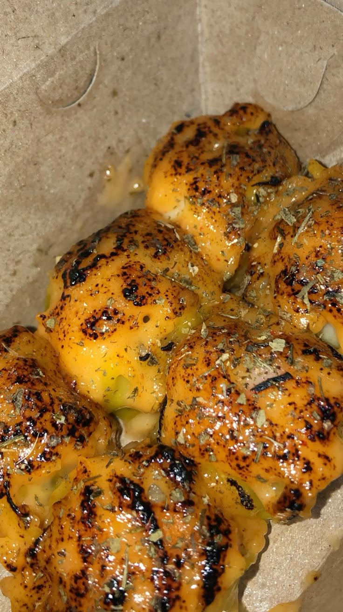
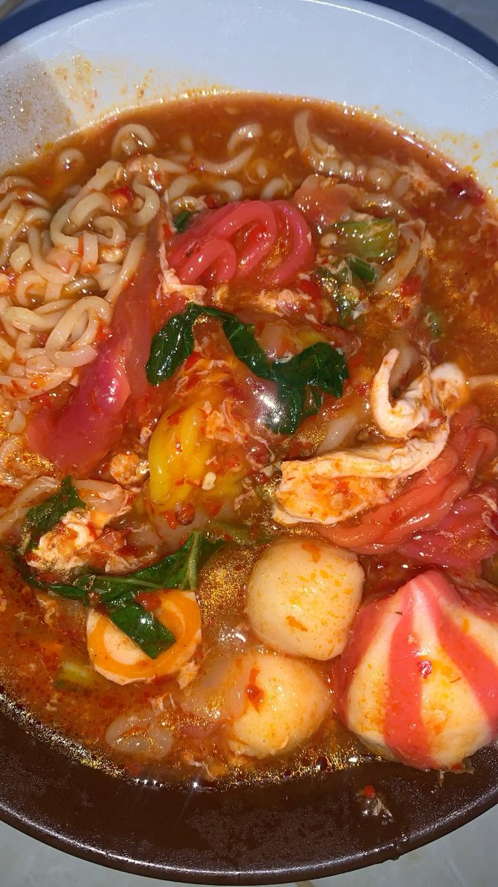
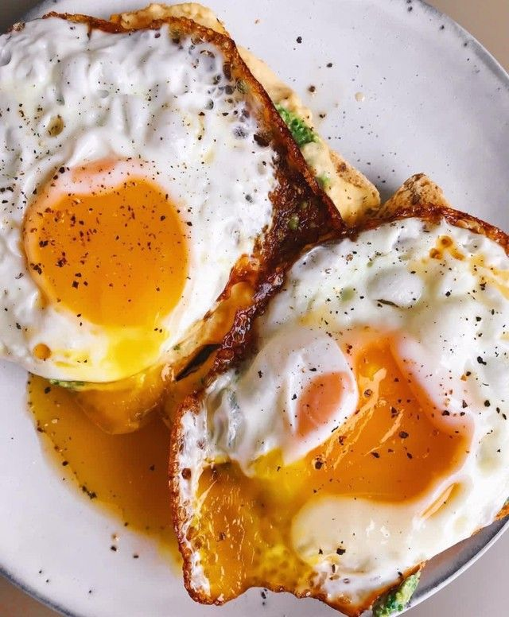
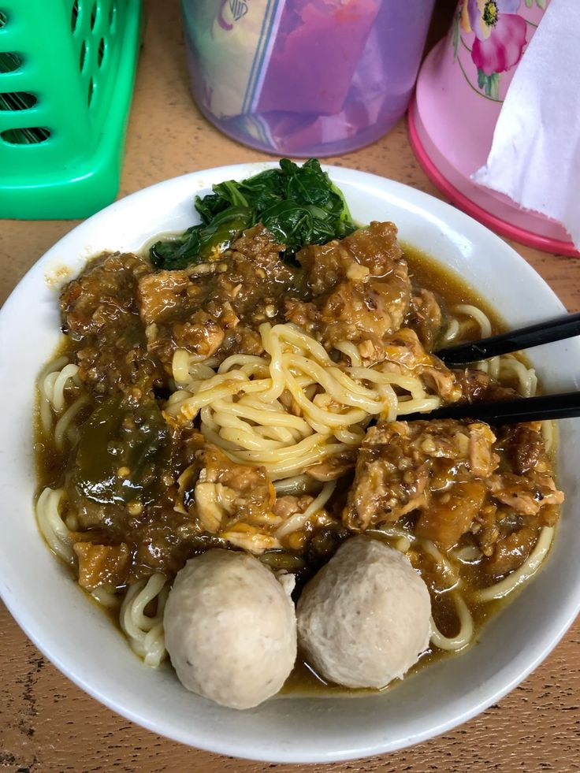
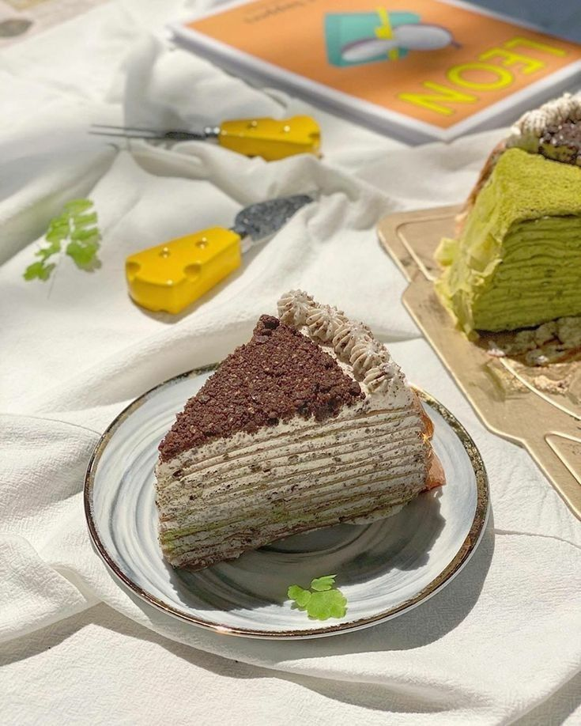

Dimsum
Lembut dan gurih, cocok buat malam dingin~

Seblak
Pedasnya nampol! Mood booster banget 🌶

Telor Ceplok
Setengah mateng, temen nasi paling manja 🍳

Mie Ayam Baso
Kuah hangat, mie kenyal, hati tenang 🥹

Cake
Lembut, manis, dan penuh cinta. Sepotong bahagia dalam setiap gigitan 🍰